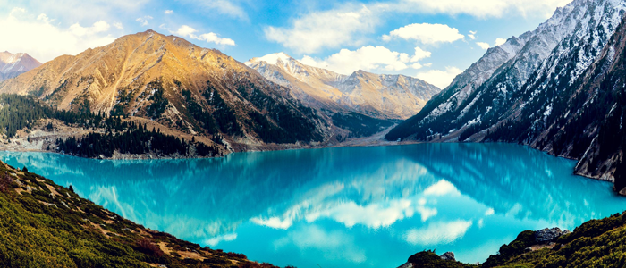
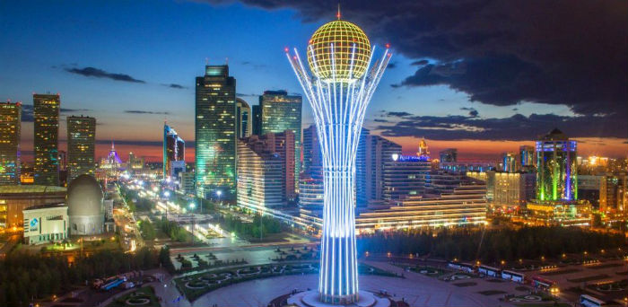
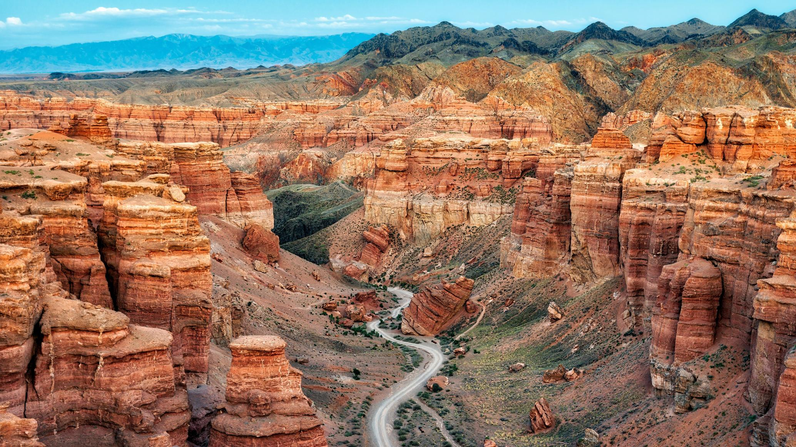
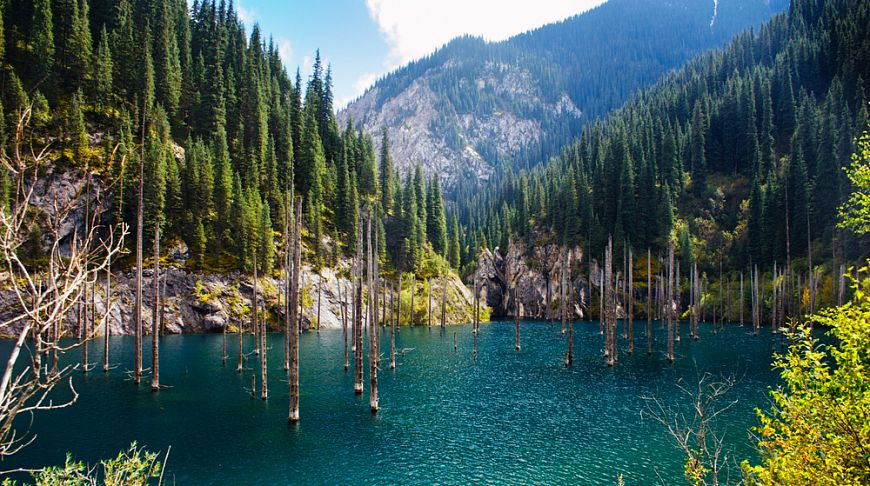
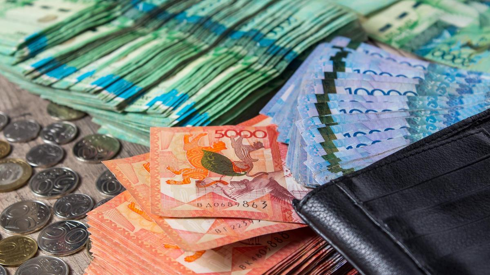

|  |
Why goFor the sake of beautiful and unique nature, sports (including extreme ones), hunting, fishing, cultural life of Almaty and, of course, people. When heading to Kazakhstan, you should first of all take care of finding friends who live here - this will make your trip not only much more pleasant, but also easier. If the time of your stay in the country is limited, then you should immediately choose which region you want to go to - the distance between cities and sights can reach hundreds and thousands of kilometers, so plan your route in advance. The most iconic and popular places worth visiting are the Charyn Canyon, Lake Kaindy, the Borovoe (Burabay) resort area, the excavations of Turkestan, the Ili River, the Singing Dune, the Balkhash Nature Reserve, the Karlag Museum, the Baikonur Cosmodrome, the mausoleum of Khoja Ahmed Yassaui, the Big Almaty Lake ( BAO), high-mountain skating rink "Medeu", ski base "Chimbulak" ("Shymbulak"), Turgen waterfalls, hot springs in Chundzha, mountains of Zailiysky Alatau, Bayanaul National Park, Mangystau - a lot of things, choose according to your interests. |
When goThe best time to visit Kazakhstan is from March to November. It should be borne in mind that in the summer in the southern regions it can be very hot (up to +40 ° C), and in the northern regions the cold can persist until May and begin as early as September-October. The rest of the time there is not much to do in Kazakhstan: it is cold, windy and rather dirty, so visiting natural attractions is no longer necessary (and they generally do not really want to go outside). The average winter temperature is about -10 ... -15 ° C in the south and up to -40 C in the north of the country. It is a completely different matter if you are interested in winter sports - there are all conditions for skating, skiing, snowboarding, sledding, as well as for heli-skiing and other entertainment in Kazakhstan (in particular, if you are going to Almaty). In this case, you should plan a trip between November and February, but just in case, it is better to check the forecast for snow, as the weather here is often unpredictable and even paradoxical. |
 |
|  |
How to get there
By plane. The easiest (and, oddly enough, the cheapest) option is direct flights operated from Moscow, St. Petersburg and Novosibirsk by Air Astana, Aeroflot, S7 Airlines, SCAT Airlines. If you need to fly from another city in Russia (or another country),
then the flight will most likely be carried out with a transfer in one of the above cities.
|
LanguageOfficially, two languages are used in Kazakhstan - Kazakh (national) and Russian (language of interethnic communication). In practice, in any large city you can speak Russian - problems can arise either completely in the outback, or if a person fundamentally does not want to speak Russian with you (this rarely happens). Usually people are open to conversation and are happy to help foreigners find their way or show something. Few people speak English, but many understand it (especially young people). |
 |
|  |
Currency and its featuresThe national currency of Kazakhstan is tenge. Payment for any goods and services in the country is made only in national currency. You can change euros, dollars or rubles at any exchange office - there are hundreds of them in any major
city. As always, it is better not to change at the station or at the airport, but already in the city. In addition, you can always withdraw the amount you need in tenge from your ruble or multicurrency card using an ATM. Many large
Russian banks are represented here (Sberbank, Alfa Bank, VTB, Home Credit Bank), local ones also allow you to withdraw money with a small commission. There are international currency transfers "Zolotaya Korona", Western Union,
Unistream. In large cities, most purchases and services can be paid for by bank transfer, but cash is still more reliable.
|